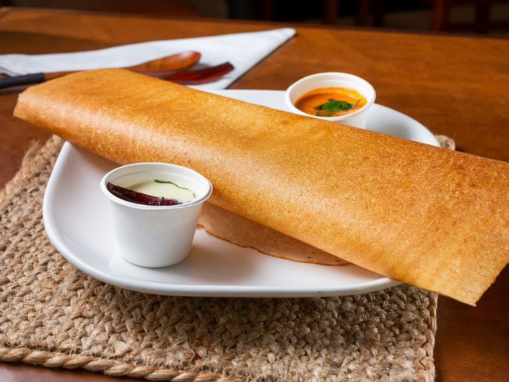

Dosa Recipe
Ingredients
- 1 cup rice
- 1/2 cup urad dal (split black gram)
- 1/4 cup poha (flattened rice)
- 1/4 tsp fenugreek seeds
- Salt to taste
- Oil for cooking
Instructions
- Rinse rice, urad dal, and fenugreek seeds separately. Soak the rice and poha together and urad dal with
fenugreek seeds in water for 4-6 hours.
- Drain the water and grind the rice and poha to a smooth batter. Grind the urad dal and fenugreek seeds
separately until fluffy.
- Mix both batters together, add salt, and let the batter ferment overnight or for 8-10 hours.
- Once fermented, stir the batter. If it's too thick, add a little water to get a pouring consistency.
- Heat a non-stick pan and pour a ladleful of batter. Spread it in a circular motion to form a thin dosa.
- Drizzle a few drops of oil around the edges and cook until golden brown and crispy.
- Serve hot with coconut chutney and sambar. Enjoy your dosa!